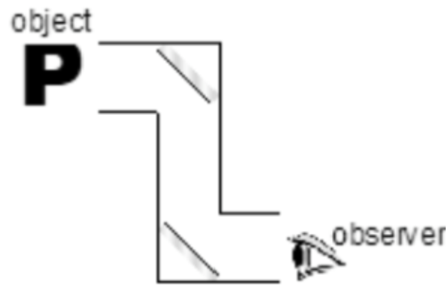
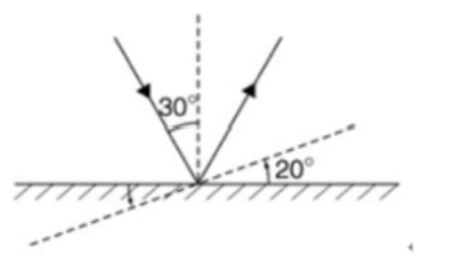

S3 Physics · 3 multiple-choice items
An object is placed near one end of a periscope as shown. Which of the following figures best represents the image observed?

In the figure below the angle of incidence of a ray on a plane mirror is 30°. If the mirror is rotated anti-clockwise through an angle of 20°, what is the reflected ray rotated?

A clear image of a pen is formed by a plane mirror but not a metal plate. Which of the following is a reason for this?
Teacher page · 3 items
Answer: D. letter P
Guide: A periscope has two plane mirrors. Each mirror reverses the image once, so the two reversals cancel. The observer sees an upright image with the same left-right orientation as the object: P.
Answer: D. 40°, anticlockwise.
Guide: Turning a plane mirror through an angle θ turns the reflected ray through 2θ in the same direction. The mirror turns through 20° anti-clockwise, so the reflected ray turns through 40° anti-clockwise. The incident ray stays fixed: the angle of incidence falls from 30° to 10°, and the angle of reflection falls by the same amount, so the reflected ray swings through 40°.
Answer: D. The plane mirror reflects parallel light rays into the same direction but the metal plate does not.
Guide: Since the metal plate is not smooth enough, diffuse reflection of light takes place on the metal plate. On the other hand, regular reflection of light takes place on the plane mirror.